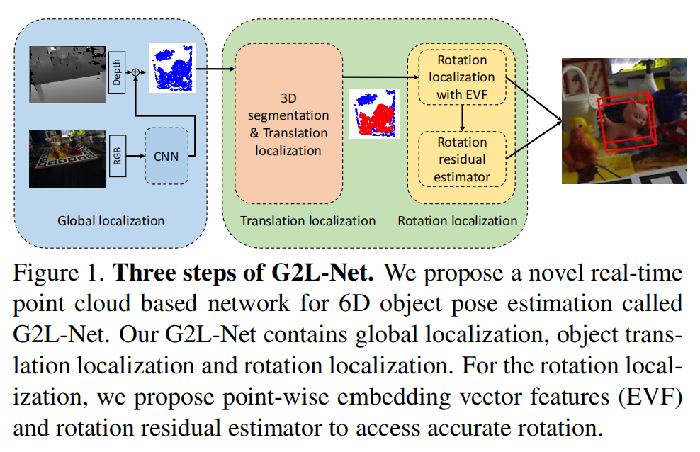

G2L-Net: Global to Local Network for Real-time 6D Pose Estimation with Embedding Vector Features
来源：CVPR 2020
代码：https://github.com/DC1991/G2L_Net
引用量：8
新版本：FS-Net（CVPR2021），还没看
提出的问题
- 一些基于深度学习的方法预测表现达到了sota，但做不到实时性，太慢
- 虽然存在一些方法能够做到实时性，但这些方法只是用了RGB图，无法处理存在遮挡和光照变化的情况
- 当加入深度信息后，可以处理诸如遮挡的复杂情况，但是计算密集。并且这些基于RGBD的方法的一个常见问题是：利用来自深度信息中的视点信息(view point infomation)并不是很有效，从而降低了它们的姿态估计精度。为了克服这一点，这些方法倾向于使用后细化机制( post-refinement mechanism)或假设生成/检验机制(hypotheses generation/verification mechanism)来提高姿态估计的精度，但同时也降低了姿态估计的推理速度，还是做不到实时性
已有的方法
1. 基于RGB
- 传统的方法是在3的模型和测试图片之间做RGB特征匹配，从而估计物体的6D姿态。但是需要手工设计特征，并且这种方法对背景杂乱和图像变化的情况不鲁棒
- 基于学习的方法，训练模型来预测关键点，使用PnP算法计算物体的姿态。该方法将姿态估计任务分为两个子任务： translation estimation和rotation estimation. 但是RGB 图像的特征容易受到光照影响。
2. 基于RGB-D
- 当深度信息可用时，可以从输入的RGB-D数据中学习特征，并采用对应分组和假设验证(correspondence grouping and hypothesis verification)，但是这种方法对图片的variations和background clutter很敏感，并且这两步操作也增加了时间开销
- 在后处理阶段才使用深度信息，结合ICP做进一步的优化(PoseCNN就是这么干的)，但也很耗时
- 把深度信息看作一个通道，和RGB一起提特征(应该类似在通道维度concat成4维)，但不能充分利用几何信息
3. 基于点云
- 使用类似PointNet的架构，直接从点云预测姿态
本文的方法
将6D物体姿态估计解耦为三个子任务：全局定位、平移定位和旋转定位(global localization, translation localization, and rotation localization).

方法的细节


1. Global localization
为了快速定位目标物体在整个场景中的全局位置，作者训练YOLOV3来检测RGB图中的物体边界框，并输出one-hot形式的物体预测类别，以实现更好的点云实例分割、平移和旋转估计。
之前的方法是使用2D边界框来生成 frustum proposals，这种方法只在x和y轴上减少了3D搜索空间。
这里，作者不仅仅使用2D的边界框，还使用了一个三维球体，进一步减少了在z轴上的3D搜索空间。（实际方法：只选择在球内的点）

该3维球体的中心(center)是从class probability map中最大值对应的2D位置(location)转换得到的。(需要知道相机参数和对应深度值将2D位置转换到3D位置)
球体的半径是被检测物体的直径。
2. Translation localization
上一步提取的点云除了包含目标物体的点，还包含其它物体的点，比如背景杂物；由于不知道平移(translation)，无法将物体点云中的点转换到局部标准坐标系下( local canonical coordinate.)。
为了解决这些问题，作者训练了两个PointNets进行三维分割，并输出分割后的点的$T$的平均值$T^-$和物体的平移$T$之间的residual distance：$||T-T^-||_2$
该残差可用于计算物体的的平移(translation)。
使用三维分割得到的mask和预测的平移(translation)就可以将物体的点云转换到局部标准坐标系下。
3. Rotation localization with embedding vector feature
前两步将物体的点云转换到了一个视点信息更明显的局部规范空间中。
理论上来说，至少需要四个viewpoints来表示一个物体的所有点：
对于姿态估计问题来说，在训练时，一个物体通常会有上百个不同的viewpoints，因此如何充分利用这些信息是很重要的。
一种方法是使用PointNets从整个点云文中提取全局信息，但是从相似的viewpoints下的点云中提取的全局点特征是高度相关的，这限制了泛化能力。
为此，作者设计了一个rotation localization network，用来预测指向关键点的点向单位向量(point-wise unit vectors).
这些关键点是每个物体的3D模型中预定义的三维点。对于每个关键点，需要明确它的number和location。针对此，论文介绍了两种方案：使用3D bbox的8个顶点 or FPS.（最后选择了前者）
rotation localization network的具体结构如下：

它的输入是局部规范空间中物体的点云，输出是指向关键点的点向单位向量(point-wise unit vectors).
损失函数如下：
其中，$K$是关键点个数，$\theta$是神经网络的参数，$X \in R^{nx3}$表示局部坐标空间中的物体的点，$|x|$是物体的总点数，$v^{-}_k(X_i; \theta)$是预测的向量，$v_k(X_i)$是向量的GT。
将point wise embedding vector features输入一个MLP，输出物体的rotation.
在做预测时，使用旋转矩阵来表示旋转，这里的旋转矩阵是使用 Kabsch 算法从关键点位置计算出来的。在训练过程中，根据点向向量(point-wise vectors)的定义，只使用关键点位置来表示这个旋转（即：测试时不使用模块A）。这样能省时间，且效果更好。
为了更好地利用点向嵌入向量特征(point-wise embedding vector features)中的视点(view point)信息，作者添加了一个额外的网络分支(模块C)来估计预测的旋转(模块B)和GT之间的残差。
但并没有残差的GT。
To address this problem we train this estimator in online fashion.（这是？）
假设 rotation localization network中的模块B的GT是$P$，模块B的输出为$P^-$，则模块C(rotation residual estimator)的target就等于$ ||P − P^-||_2$，
随着旋转网络的收敛，学习残差值变得越来越困难。如果rotation localization network能够充分利用embedding vector feature，则可以忽略rotation residual estimator的作用。然而，当旋转网络不能充分利用embedding vector feature时，rotation residual estimator将对最终结果产生很大的影响。
这里的rotation residual estimator输出残差和estimated rotation的输出是同步进行的，这和之前一些方法的post-refinement module是不同的，因此可节省时间。